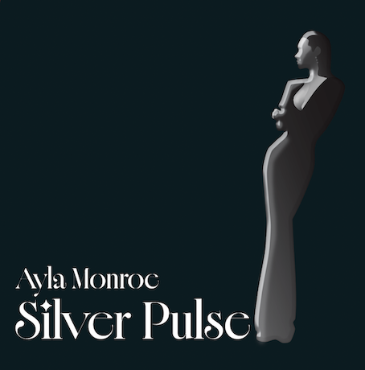
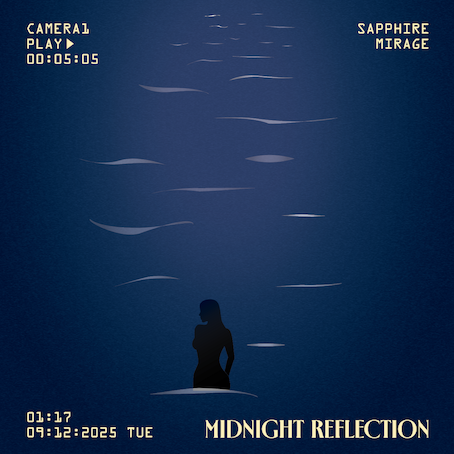

About Ozturk Records
Ozturk Records, an independent music collective, collaborates with artists producing electronic, R&B, and alternative genres. Founded in 2025, the label aims to produce sound-focused visuals and experimental projects.
Featured Albums

Silver Pulse
Silver Pulse is an experimental album that blends electronic atmospheres with R&B textures. Its visual identity and atmospheric composition define Ozturk Records' new era.

Midnight Reflection
Midnight Reflection is a deep, slow-paced sonic journey inspired by the night atmosphere. An introspective project shaped by city lights, lonely rhythms, and dark tones.